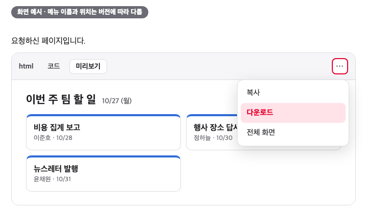
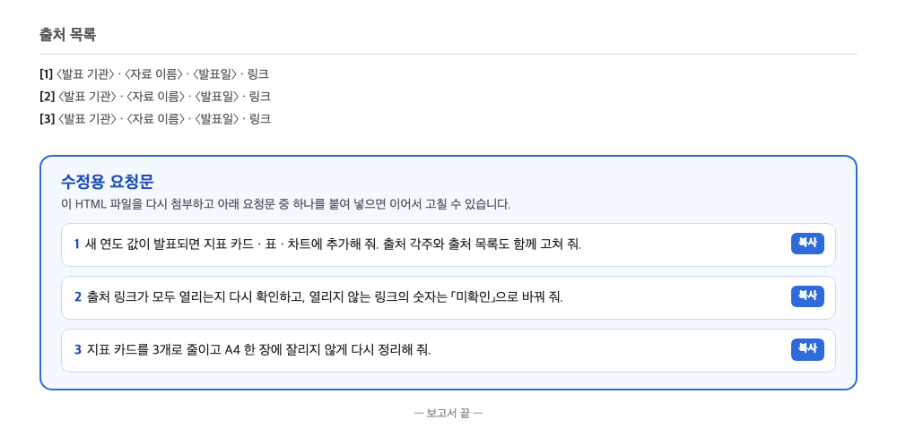
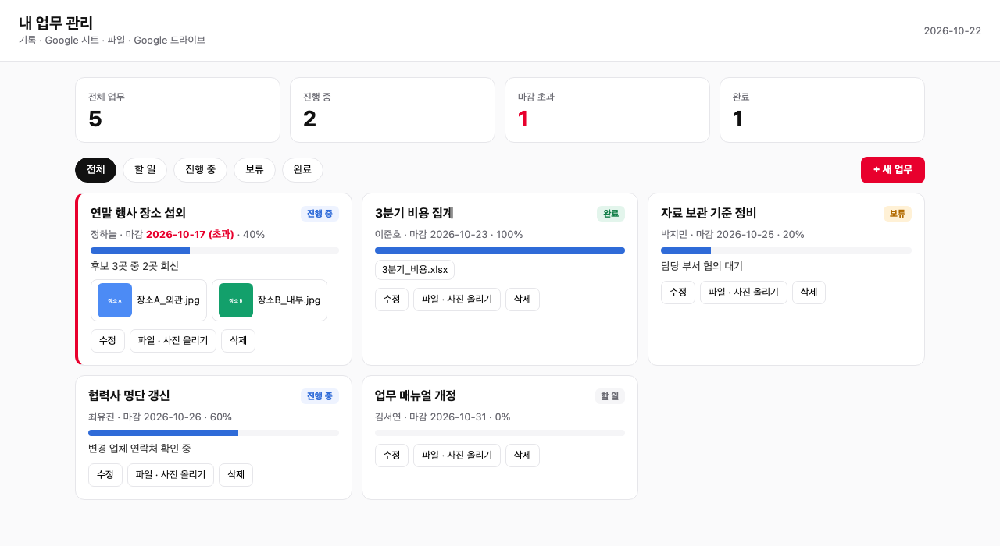
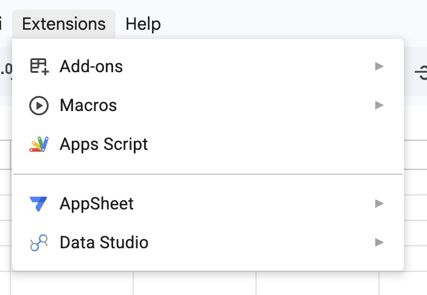
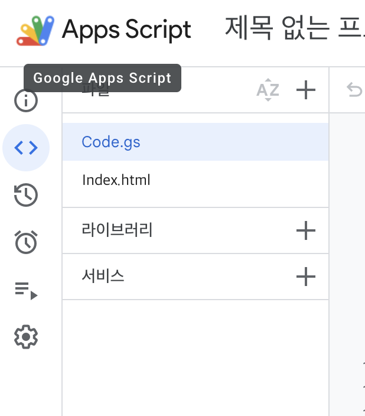
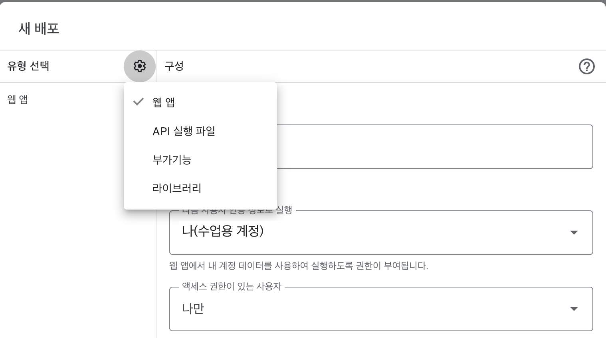

웹 리서치로 만드는
HTML 보고서
공개 웹 데이터로 대시보드를 만들고, 출처와 수치를 확인한 보고용 HTML까지 만드는 과정
오늘의 결과물
첫 HTML 파일
브라우저에서 바로 열리는 파일
공통 대시보드
지표 카드 · 차트 · 필터
보고용 HTML
요약 · 근거 · 차트 · 출처
내 주제 보고서
웹 검색부터 보고서까지
진행 순서
| 블록 | 결과 |
|---|---|
| 01 AI 흐름과 동작 원리 | — |
| 02 업무 도구 제작 시작 | 첫 HTML 파일 |
| 03 공통 실습: 대시보드 | 공통 대시보드 HTML |
| 04 보고용 HTML 변환 | 보고용 HTML 1건 |
| 블록 | 결과 |
|---|---|
| 05 본인 주제 보고서 | 내 주제 보고서 1건 |
| 06 대시보드 스킬로 저장 | 대시보드 스킬 1개 |
| 07 심화 · 선택: GAS 업무 관리 웹 | 업로드 · 기록 웹 앱 |
| 08 결과물 시연 · 사용 기준 | 사용 기준 1장 |
실습 준비
다른 툴을 쓰는 경우
- Claude · Gemini도 같은 표준(스킬 · MCP)을 따름
- 오늘은 ChatGPT 화면 기준으로 진행
- 막히면 튜터에게 요청
실습 자료 받기
정보 취급 기준
| 기준 | |
|---|---|
| 데이터 | 공개 웹 데이터만 · 회사 내부 자료 · 실데이터 금지 |
| 주제 | 시장 · 제도 · 업계 동향처럼 공개 자료로 확인되는 것 |
| 수치 | 출처 없는 숫자는 보고서에 넣지 않음 |
| 사이트 | 검색은 ChatGPT가 · 출처 확인은 링크를 직접 열어서 |
| 결과물 | AI 결과는 초안 · 공유 전 확인 책임은 작성자 |
AI 흐름과 동작 원리
AI가 웹을 찾아 보고서를 만드는 원리
채팅에서 에이전트로
AI 사용자가 느낀 변화
웹 검색의 동작 방식
「○○ 최근 3년 자료 찾아 줘」
출처 달린 표
검색은 AI, 확인은 사람
AI 답을 그대로 쓰기 전에
- 그럴듯한 문장 ≠ 맞는 내용
- 숫자 · 날짜 · 출처부터 확인
AI는 모르는 내용도 그럴듯하게 작성
- 자료에 없는 빈칸을 추측으로 채움
- 모른다고 답하지 않는 경우가 많음
AI가 모르는 정보: 최신 정보 · 회사 내부 정보
- 최신 정보 → 웹 검색으로 보완
- 회사 정보 → 오늘은 입력하지 않음 (반입 금지)
근거를 주는 두 가지 방법
- 웹에서 찾기: 웹 검색 · 심층 리서치
- 자료 안에서만: 첨부한 파일 기준으로 답변
오늘 쓰는 ChatGPT 기능
세 회사의 공통 스킬 표준
| 발표 | 내용 | |
|---|---|---|
| Anthropic · Claude | 2025.10 발표 · 2025.12 오픈 표준 | Agent Skills · SKILL.md 공개 (agentskills.io) |
| OpenAI · ChatGPT | 2026.07 플러그인 디렉터리 | 스킬 · 앱을 플러그인으로 묶어 설치 |
| Google · Gemini | 2026.09 발표 · 10월 배포 시작 | 「SKILL.md 표준」 기반 스킬 · Gem은 스킬로 자동 이전 |
업무 도구 제작 시작
만들 결과를 먼저 보고, 첫 HTML 파일을 만들어 브라우저로 열기
완성 보고서 미리 보기
직장인의 생성형 AI 활용 · 2025
요약 국민 44.5%가 생성형 AI를 경험[1] · 사무직은 71.9%로 직업 중 가장 높음[1]
근거 AI 서비스 경험률 2021년 32.4% → 2025년 67.0%[2]
[2] 같은 조사 보도자료 주요 결과표
- 요약 → 근거 → 차트 순서
- 숫자마다 출처 각주
- 필터로 구분별 보기
- 메일 첨부 · 인쇄 그대로
- 파일 아래 「수정용 요청문」
답변과 미리보기
- 글로 받는 답: 읽고 끝
- 코드 블록 미리보기: 화면을 보면서 고쳐 달라고 요청
HTML 파일을 이루는 세 가지
HTML
화면 뼈대 · 카드 · 표 자리
CSS
색 · 크기 · 배치
JavaScript
숫자 계산 · 차트 · 필터 동작
첫 HTML 파일 만들기
간단한 페이지를 만들어 미리보기 → 내려받기 → 브라우저로 열기까지 한 번에
- 요청문 붙여 넣기
- 코드 블록에서 미리보기
- HTML 파일로 내려받기
- 더블클릭으로 브라우저에서 열기
① 요청문 입력
우리 팀 이번 주 할 일 3개를 보여 주는 HTML 페이지를 만들어 줘.
- 위쪽: 제목 「이번 주 팀 할 일」과 오늘 날짜
- 가운데: 할 일 카드 3개 (업무명 · 담당 · 마감일)
- 파일 하나로, 외부 라이브러리 없이 브라우저에서 바로 열리게이번 주 팀 할 일 10/27 (월)
② 내려받아 브라우저로 열기
내려받기
미리보기 창 오른쪽 위 다운로드 아이콘 · 없으면 「HTML 파일로 내려받게 해 줘」
이름 정하기
이번주_할일.html
열기
파일 더블클릭 → 브라우저
확인
미리보기와 같은 화면인지

고정된 화면과 갱신되는 화면
- HTML 파일: 만든 시점의 숫자로 고정
- 웹 앱: 열 때마다 최신 숫자
정적 웹: 숫자가 고정된 파일
동적 웹: 열 때마다 최신 데이터
공통 실습:
리서치 데이터 대시보드
강사가 미리 모은 공개 데이터로 전원이 같은 대시보드 만들기
공통 실습 데이터
| 항목 | 내용 |
|---|---|
| 주제 | 직장인의 생성형 AI 활용 |
| 출처 | 과학기술정보통신부 · 한국지능정보사회진흥원 「2025 인터넷이용실태조사」 (2026.3.31 발표) 외 2건 |
| 지표 | 생성형 AI 경험률 · AI 서비스 경험률 · 유료 구독률 · ChatGPT 이용 목적 등 7개 |
| 구분 | 전체 · 성별 · 연령 · 직업(사무직 등) |
| 파일 | 오후_공통데이터.csv · 지표 · 구분 · 연도 · 값 · 단위 · 출처키 |
AI가 잘 읽는 표
- 한 행에 한 건
- 머리글은 한 줄
- 병합 셀 없음
대시보드 설계 순서
지표에 맞는 차트
| 보고 싶은 것 | 차트 |
|---|---|
| 숫자 하나 (올해 경험률) | 지표 카드 |
| 항목끼리 비교 (직업 · 연령) | 막대 |
| 시간에 따른 변화 (연도별 추이) | 선 · 세로 막대 |
| 순위 · 비중 (상위 5개) | 가로 막대 |
| 두 기준의 교차 (연령 × 성별) | 색으로 칠한 표 |
| 건별 확인 (원본 데이터) | 표 |
구체적으로 요청하기
- 누가 볼지 · 어떤 데이터
- 어떤 화면 · 어떤 형식
대시보드 요청
지표 카드 4개(경험률 · 전년 대비 · 사무직 · 유료 구독률),
연도별 추이, 직업별 막대, 구분 필터, 원본 표와 출처.
CSV에 없는 숫자는 만들지 마.
리서치 데이터 대시보드
공개 데이터 CSV로 지표 카드 · 추이 차트 · 필터가 있는 대시보드를 만들고, 의도와 다른 부분을 한 번에 하나씩 고치기
- CSV 첨부 + 요청문
- 화면 확인 · 의도와 다른 곳 찾기
- 한 번에 하나씩 수정 요청
- 오류는 메시지 그대로 전달
- 최종 파일 저장 · 다시 열기
① CSV 첨부 후 요청
첨부한 오후_공통데이터.csv 로 「직장인의 생성형 AI 활용」 대시보드를 HTML 한 파일로 만들어 줘.
- 위쪽: 지표 카드 4개 (가장 최근 연도 값 · 전년 대비 증감)
- 가운데: 연도별 추이 차트
- 필터: 구분별로 바꿔 보기
- 아래: 원본 데이터 표와 출처
- CSV에 없는 숫자는 만들지 마
- 차트는 외부 라이브러리 없이 (인터넷 연결 없이도 열리게)② 의도와 다른 부분 찾기
| 볼 곳 | 확인 | 다르면 |
|---|---|---|
| 지표 카드 | CSV 최근 연도 값과 같은가 | 「○○ 카드 값이 CSV와 달라. CSV 기준으로」 |
| 차트 | 연도 순서 · 단위 | 「연도를 오래된 순으로」 |
| 필터 | 바꾸면 카드 · 차트가 같이 바뀌나 | 「필터가 카드에도 적용되게」 |
| 표 · 출처 | 원본 줄 수 · 출처 표시 | 「표 아래에 출처 기관 · 링크」 |
③ 수정은 한 번에 하나씩
# 한 번에 하나씩 요청
1. 지표 카드 순서를 ○○ · ○○ · ○○ · ○○ 로 바꿔 줘
2. 차트를 막대 그래프로 바꾸고 최근 연도만 강조해 줘
3. 필터를 바꾸면 지표 카드 숫자도 같이 바뀌게 해 줘
4. 숫자는 소수점 첫째 자리까지, 단위를 붙여 줘- 여러 곳을 한 번에 고치면 다른 부분이 깨지기 쉬움
- 하나 고치고 확인한 뒤 다음
- 문제가 생기면 「직전 버전으로 되돌려 줘」
전체 재생성 대신 부분 수정
- 바꿀 곳 하나만 짚어서 요청
- 잘 된 부분은 그대로 유지
④ 오류 대처
이 HTML을 열었더니 아래처럼 나와. 고쳐서 다시 파일로 줘.
[보이는 증상] 〈예: 차트 자리가 비어 있음 · 필터를 눌러도 안 바뀜〉
[오류 메시지] 〈화면이나 F12 콘솔의 빨간 글씨를 그대로 붙여 넣기〉- 증상 설명보다 오류 메시지 원문이 효과적
- F12 → Console 탭 → 빨간 글씨 복사
- 자주 나오는 증상: 빈 화면 · 차트 없음 · 필터 무반응
화면은 그대로, 데이터만 교체
- 화면 구성은 한 번만 만들기
- 다음 달에는 새 CSV만 첨부
보고용 HTML 변환
대시보드를 읽는 보고서로: 요약 · 근거 · 차트 · 출처
대시보드와 보고서
직장인의 생성형 AI 활용 · 2025
요약 국민 44.5%가 생성형 AI를 경험[1] · 사무직은 71.9%로 직업 중 가장 높음[1]
근거 AI 서비스 경험률 2021년 32.4% → 2025년 67.0%[2]
[2] 같은 조사 보도자료 주요 결과표
보고용 HTML 변환
대시보드를 요약 · 근거 · 차트 순 보고서로 바꾸고, 출처 표기 · 수치 대조 · 인쇄까지 확인
- 변환 요청문
- 출처 각주 확인
- 핵심 수치 3개를 CSV와 대조
- 인쇄 미리보기로 잘림 확인
① 보고서로 바꾸기
방금 만든 대시보드를 보고용 HTML로 바꿔 줘.
- 순서: 요약 3줄 → 근거(지표별 설명) → 차트 → 원본 표
- 요약의 모든 숫자 뒤에 [출처] 각주, 문서 끝에 출처 목록(기관 · 자료명 · 링크)
- CSV에 없는 해석 · 숫자는 넣지 말고, 필요하면 「추가 확인 필요」로 표시
- 인쇄하면 A4 세로에 잘리지 않게 (표 · 차트가 페이지 경계에서 나뉘지 않게)② 수치 대조
| # | 확인 | 방법 |
|---|---|---|
| 1 | 요약의 숫자 3개 | CSV에서 같은 줄 찾아 값 · 연도 · 단위 비교 |
| 2 | 출처 각주 | 각주 번호 → 출처 목록 → 링크가 실제로 열리는지 |
| 3 | 해석 문장 | 「증가했다」 「가장 높다」가 표와 맞는지 |
화면 숫자와 원본 대조
- 화면의 숫자와 원본 표의 숫자를 하나씩 비교
- 일치하면 다음 지표로
사실과 가설 구분
- 사실: 표에 있는 숫자
- 가설: 원인 추정 → 「추정」으로 표시
③ 인쇄 · 공유 점검
인쇄 미리보기
브라우저에서 Ctrl+P (맥 ⌘+P)
잘림 확인
오른쪽 잘림 · 표가 페이지 중간에서 나뉨
PDF로 저장
대상 → PDF로 저장 · 메일 첨부용
이 보고서를 인쇄하면 오른쪽이 잘리고 표가 페이지 중간에서 나뉘어.
A4 세로 · 여백 15mm 기준 인쇄용 설정을 넣어서 다시 파일로 줘.HTML 파일은 만든 시점의 숫자
- 숫자가 바뀌면 → 새 CSV로 다시 만들기
- 매일 바뀌는 숫자 → 웹 앱 (심화 06)
본인 주제 보고서
담당 업무와 관련된 공개 주제 하나로, 자료 수집부터 보고서까지
주제 고르기
좋은 주제
- 공개 자료로 확인 가능
- 연도별 숫자가 있음
- 담당 업무와 관련
- 예: 업계 디지털 전환 · 근무제도 변화 · 사무 자동화 도입 · 에너지 가격
피할 주제
- 회사 내부 실적 · 고객 정보
- 숫자 없는 의견 · 전망만
- 출처가 블로그 · 커뮤니티뿐
- 너무 넓은 주제 (「AI 전체」)
심층 리서치는 계획부터
- 계획을 먼저 보여 줌
- 계획 단계에서 고치면 결과가 바뀜
심층 리서치 진행 순서
리서치 결과 확인
내 주제 HTML 보고서
웹 검색으로 공개 자료를 모으고, 지표 3~4개 대시보드와 보고서를 한 파일로 만들기
- 웹 검색으로 자료 수집
- 링크 열어 숫자 확인
- 대시보드 + 보고서 한 번에
- 수정용 요청문을 파일에 포함
- 수치 대조 · 인쇄 확인
① 웹 검색으로 자료 모으기
「〈내 주제〉」에 대해 최근 3년 공개 자료를 찾아 줘.
- 정부 · 공공기관 · 국제기구 · 업계 협회 공식 자료 우선
- 지표 3~4개를 연도별 표로 (지표 · 연도 · 값 · 단위 · 출처 기관 · 링크 · 발표일)
- 확인되지 않은 값은 비워 두고 「미확인」
- 마지막에 표를 CSV로 내려받게 해 줘- 입력창 + → 웹 검색 (깊게: 심층 리서치)
- 표 · 링크가 나오면 다음 단계
- 숫자가 없으면 주제를 좁히기
② 출처 링크 확인
| 확인 | 버릴 자료 |
|---|---|
| 링크가 실제로 열리고 그 숫자가 있는가 | 링크가 없거나 숫자가 안 보임 |
| 발표 기관 · 발표일 | 출처가 개인 블로그 · 커뮤니티 |
| 최신 자료인가 | 3년 이상 지난 값만 있음 |
| 원 자료인가 | 언론 · 블로그 재인용만 |
③ 대시보드 + 보고서
찾은 자료(CSV)로 대시보드와 보고용 HTML을 한 파일로 만들어 줘.
- 위: 지표 카드 3~4개 · 가운데: 추이 차트 · 아래: 보고서(요약 → 근거 → 차트)
- 모든 숫자에 출처 각주, 끝에 출처 목록
- 맨 아래 「수정용 요청문」 칸: 이 파일을 다시 첨부해 수정할 때 쓸 요청문 3개
- A4 인쇄에서 잘리지 않게
- 외부 라이브러리 없이 한 파일로④ 수정용 요청문 남기기

- 다음 달 같은 보고서 → 파일 첨부 + 요청문 그대로
- 예: 「2026년 값이 나오면 표와 차트에 추가해 줘」
- 예: 「출처 링크가 열리는지 다시 확인해 줘」
- 다른 담당자도 이어서 수정 가능
대시보드 스킬로 저장
오늘 반복한 요청을 스킬 하나로 · 다음부터는 CSV 첨부 + 한 문장
오늘 반복한 요청
- 지표 카드 · 차트 · 필터 배치
- 숫자마다 출처 각주 · 「미확인」
- 맨 아래 수정용 요청문
- A4 인쇄 · 외부 라이브러리 없이
스킬로 저장하면
- 새 대화에서 CSV 첨부 + 한 문장
- 매번 같은 규칙 · 같은 모양
- 팀원과 같은 기준 공유
HTML 대시보드 스킬 만들기
오늘 만든 대시보드 · 보고서의 규칙을 스킬로 저장하고, 새 대화에서 다른 CSV로 한 문장 호출
- 대화로 스킬 만들기 · 〈 〉 채우기
- 참고 파일로 내 보고서 HTML 올리기
- 설명문 다듬기 · 저장
- 새 대화 · 다른 CSV로 호출
- 검수 후 지침 고치기
① 대화로 스킬 만들기
오늘 이 대화에서 대시보드와 보고서를 만들 때 쓴 요청과 고친 내용을 모아서
「HTML 대시보드」 스킬을 만들어 줘. 이름 · 설명 · 지침 · 참고 파일 4칸으로 정리하고,
모르는 부분은 나에게 하나씩 물어봐 줘.
- 입력: 〈예: 지표 · 구분 · 연도 · 값 · 단위 · 출처 열이 있는 CSV〉
- 화면: 〈예: 위 지표 카드 3~4개 · 가운데 추이 차트 · 구분 필터 · 아래 보고서〉
- 꼭 지킬 것: 〈예: 숫자마다 출처 각주 · 확인 못 한 값은 「미확인」 · 맨 아래 수정용 요청문 3개 · A4 인쇄 · 외부 라이브러리 없이 한 파일〉
- 하지 말 것: 〈예: CSV에 없는 숫자 만들기 · 열 이름 임의로 바꾸기〉
- 이 스킬을 부를 때 쓸 말: 〈예: 「이 CSV로 대시보드 만들어 줘」 「대시보드로 정리해 줘」〉- 오늘 실습한 대화창에서 시작 · 고친 내용이 들어가게
- 플러그인 → 스킬 → 만들기 → 대화로 만들기
- 〈 〉만 내 기준으로 바꿔 붙여 넣기
- 되묻는 질문에 답하고 지침을 읽은 뒤 저장
② 이렇게 채워지면 됨
| 칸 | 들어갈 것 |
|---|---|
| 설명 | 언제(CSV 첨부 · 대시보드 요청) · 무엇으로 · 어떤 결과 |
| 지침 | 화면 구성 · 출처 규칙 · 인쇄 · 금지 사항 |
| 참고 파일 | 실습 4의 내 보고서 HTML · 디자인 기준 |
③ 새 대화 · 다른 CSV로 호출
지표 카드: 전체 10 · 진행 중 5 · 마감 초과 2 · 완료 2 …
출처: 업무관리_예시데이터.csv
④ 검수 후 지침 고치기
| 보이는 문제 | 지침에 넣을 문장 |
|---|---|
| 카드 수 · 배치가 매번 다름 | 「지표 카드는 3~4개 · 맨 위 한 줄」 |
| 출처가 빠진 숫자가 있음 | 「출처 없는 숫자는 「미확인」으로 표시」 를 맨 앞으로 |
| 인쇄하면 차트가 잘림 | 「A4 세로 · 차트 폭 100% · 페이지 나눔 금지」 |
| 스킬이 안 불림 | 설명문에 내가 실제로 쓴 표현 추가 (「대시보드로 정리해 줘」) |
출처가 결과 품질을 결정
- 신뢰할 수 있는 출처 → 신뢰할 수 있는 보고서
- 출처 선택은 사람이
심화 · 선택:
GAS로 내 업무 관리 웹
입력하고 파일을 올리면 시트와 드라이브에 쌓이는 나만의 웹 앱
업무 관리 웹의 구조
목표 화면

원본 보호: 웹 앱을 통한 접근
웹 앱 주소로 접속
- Code.gs: 시트 · 드라이브 ↔ 화면
- Index.html: 화면 틀
- 즐겨찾기로 매일 사용
입력 화면에서 오류 줄이기
- 상태는 목록에서 고르기 · 날짜는 달력
- 오탈자 · 빈칸이 처음부터 줄어듦
보고서 HTML과 업무 관리 웹
| 보고서 HTML | GAS 웹 앱 | |
|---|---|---|
| 데이터 | 파일 안에 고정 | 시트에서 매번 읽기 |
| 입력 · 업로드 | 없음 · 보기 전용 | 입력 · 수정 · 파일 올리기 |
| 여는 방법 | 파일 더블클릭 · 메일 첨부 | 웹 앱 주소 · 내 Google 계정 |
| 잘 맞는 업무 | 월간 보고 · 조사 결과 공유 | 할 일 · 요청 접수 · 자료 모음 |
GAS로 내 업무 관리 웹 만들기
예시 데이터만 시트에 넣고, 목록 보기부터 기능을 하나씩 요청해 웹 앱으로 완성하기
- 예시 데이터를 시트로 가져오기
- Apps Script 열기
- 첫 요청 · 목록만 보기 → 붙여 넣기 · 배포
- 기능을 하나씩 추가 · 새 버전 배포
- 업무 입력 → 시트에 쌓이는지 확인
① 예시 데이터를 시트로
| 열 | 예 |
|---|---|
| ID · 업무명 · 담당 | T-001 · 10월 손해율 집계 · 김민수 |
| 마감일 · 상태 · 진행률 | 2026-11-03 · 진행 중 · 60 |
| 메모 | 재보험사별 표 정리 중 |
새 시트
Google 시트 → 빈 스프레드시트 · 이름 「내 업무 관리」
가져오기
파일 → 가져오기 → 업로드 → CSV 선택 → 현재 시트 바꾸기
시트 이름
아래 탭 이름을 업무로
② Apps Script 열기
Apps Script
메뉴 확장 프로그램 → Apps Script
프로젝트 이름
왼쪽 위 「제목 없는 프로젝트」 → 「내 업무 관리」

③ 첫 요청 · 목록만 보기
이 스프레드시트의 「업무」 시트를 읽어서 업무를 카드 목록으로 보여 주는 Apps Script 웹 앱을 만들어 줘.
Code.gs와 Index.html 두 파일로 나눠 각각 전체 코드를 줘.
- 첫 줄은 열 이름: ID, 업무명, 담당, 마감일, 상태, 진행률, 메모
- 카드에는 업무명 · 담당 · 마감일 · 상태 · 진행률 막대
- 외부 라이브러리 없이
- 마지막에 붙여 넣기 · 배포 순서를 번호로④ 두 파일 붙여 넣기
Code.gs
기존 내용 전부 지우고 받은 Code.gs 붙여 넣기
Index.html
파일 + → HTML → 이름 Index (확장자 없이) → 붙여 넣기
저장
디스크 아이콘 · ⌘S / Ctrl+S

⑤ 웹 앱 배포
새 배포
오른쪽 위 배포 → 새 배포 → 유형 웹 앱
실행 · 액세스
실행: 나 · 액세스: 나만
권한 허용
계정 선택 → 「고급」 → 「내 업무 관리(으)로 이동」 → 허용
열기
웹 앱 URL → 업무 10건이 카드로 보이면 성공

⑥ 기능 하나씩 더하기 · 입력 · 수정
화면 위에 「새 업무」 버튼을 넣어 줘. 입력한 내용이 「업무」 시트 맨 아래에 저장되고 목록에 바로 보이게.
상태는 대기 · 진행 중 · 완료 중에서 고르고, 마감일은 달력으로. 바뀐 파일만, 파일 전체 코드로 줘.카드마다 「수정」 · 「삭제」 버튼을 넣어 줘. 수정은 같은 입력 창으로, 삭제는 한 번 더 묻고 시트에서도 지워 줘.
바뀐 파일만, 파일 전체 코드로 줘.⑦ 기능 하나씩 더하기 · 한눈에 보기 · 파일
맨 위에 지표 카드 4개(전체 · 진행 중 · 마감 초과 · 완료)와 상태별 탭을 넣어 줘.
마감일이 오늘보다 지났는데 완료가 아닌 업무는 맨 위에 빨간색으로 보여 줘. 바뀐 파일만, 파일 전체 코드로 줘.카드에서 파일이나 사진을 올리면 내 드라이브 「업무관리_파일」 폴더에 저장하고, 시트에는 「파일」 열을 만들어 링크만 남겨 줘.
10MB 이하만, 사진이면 카드에 작은 미리보기. 바뀐 파일만, 파일 전체 코드로 줘.GAS 문제 해결
| 상황 | 대처 |
|---|---|
| 「확인되지 않은 앱」 경고 | 「고급」 → 「(프로젝트)(으)로 이동」 · 내가 만든 스크립트라 정상 |
| 화면이 하얗게 나옴 | HTML 파일 이름이 Index인지 · 확장자 중복(Index.html.html) 확인 |
| 고쳤는데 그대로 | 배포 관리 → 수정 → 새 버전으로 다시 배포 |
| 업로드 실패 | 10MB 이하 · 첫 업로드 때 드라이브 권한 허용 |
| 다른 사람과 같이 쓰기 | 액세스 범위 · 데이터 노출을 사내 기준으로 먼저 확인 |
결과물 시연 · 사용 기준
튜터가 미리 확인한 결과물 5~6건 · 실무에서 쓸 기준 정리
시연에서 볼 것
| 볼 점 | 질문 |
|---|---|
| 요청문 | 어떤 요청문이 결과를 갈랐나 |
| 출처 | 숫자마다 출처 · 링크가 열리나 |
| 고친 과정 | 몇 번 고쳤고 무엇을 바꿨나 |
| 다른 업무로 | 내 업무에 바꿔 쓰면 무엇을 바꾸나 |
사용 기준 1장
| # | 기준 |
|---|---|
| 1 | 반입 금지: 회사 실데이터 · 고객 · 개인정보는 외부 AI에 넣지 않는다 |
| 2 | 출처: 보고서의 모든 숫자에 출처 · 확인 못 한 값은 「미확인」 |
| 3 | 대조: 공유 전 핵심 수치 3개 이상을 원문과 직접 대조 |
| 4 | 검수 책임: AI 결과는 초안 · 최종 확인과 책임은 작성자 |
| 5 | 재사용: 다시 고칠 요청문을 파일에 남겨 다음 작성자에게 |
문제 해결
| 상황 | 대처 |
|---|---|
| 미리보기가 안 보임 | 「미리보기로 보여 줘」 · 안 되면 코드를 복사해 메모장에 붙이고 .html로 저장 |
| 화면이 비어 있음 | F12 → Console 빨간 글씨를 그대로 붙여 넣기 |
| 숫자가 CSV와 다름 | 「CSV 값 기준으로 다시」 · 해당 줄을 붙여 넣기 |
| 웹 검색 결과에 숫자가 없음 | 주제를 좁히기 · 「공식 통계표 링크만」 |
| 네트워크가 느림 | 자료 링크의 CSV를 먼저 받아 두고 진행 |
오늘 만든 것
질문
실습 자료 · 요청문은 자료 링크에서 다시 받기